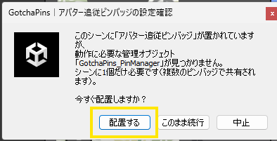

STEP 5 / 5
よくある質問（Q&A）
気になる項目をタップで開いてください。
ピンバッジを増やしたい（何種類も置きたい）
セットPrefabをいくつでも置いてOK。Managerは1個のままで全部に共有されます。増やすたびに自動で接続されます。
掴めるのに、離しても体に付かない／追従しない
シーンに GotchaPins_PinManager が無い可能性大。1個置いてください（② 設置手順の手順3）。置けば自動接続されます。
飾り台・台紙・スタンドを変えたい
セットの中の「ディスプレイ」に好きなモデルを入れてください（初期状態ではこの商品の台紙が入っています）。
ピンバッジの最初の表示位置を変えたい
セットの中の「ピンズ本体」を動かして好きな位置に置いてください。そこが初期位置（リセットで戻る場所）になります。
リセットボタンの見た目を変えたい
「リセットボタン」のモデルを好きなものに差し替えてOKです。PinResetButton コンポーネントだけは残してください（押す機能の本体です）。
アップロード時に「管理オブジェクトが見つかりません」と出た
Managerの置き忘れです。ポップアップの「配置する」を選べば自動で配置・接続されます。

ボーン固定の操作がわからない
ピンバッジを掴んでいる間に USE を押すと、その時のボーンに固定／もう一度USEで解除です。ボーンを固定した後は、ボーンから離れた位置にも設置できます。
Quest対応について
本商品は PC（Windows）ワールドでの利用を想定しています。Quest対応ワールドで使う場合は、シェーダーやパフォーマンス制限にご注意ください。
解決しないときは X @gotchapins までお気軽にどうぞ。